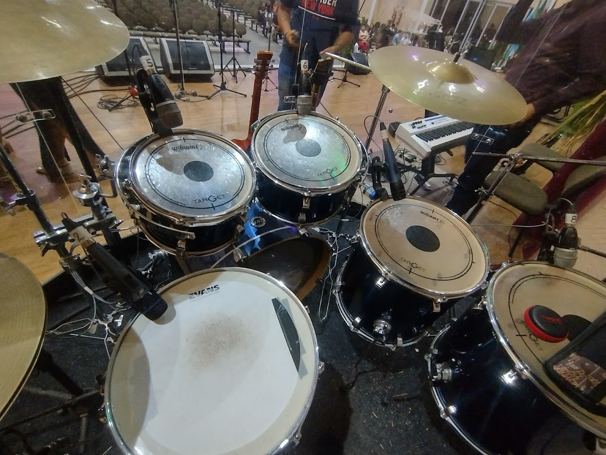

Post #1 - Biografia
Esta é uma curta biografia de Henrique C Ferreira. Nascido em Castanhal-PA, em 1995, Henrique formou-se em 2018 no curso de Análise e Desenvolvimento de Sistemas pelo Instituto Federal de Ciências e Tecnologia do Pará (IFPA). Graduado, ele conseguiu uma vaga como Analista de sistemas no Hospital Modelo de Ananindeua, onde segue atuando até hoje. Foi nesta instituição que ele foi impulsionado a aderir ao cargo chefe de seu curso nativo e abraçar a programação. Assim, influenciado tambem por sua então noiva, Suellen Silva, que acabara de migrar para a área de tecnologia, Henrique se inscreveu em um bootcamp fullStack oferecido pela DIO. Foi através deste bootcamp que Henrique se viu desafiado a criar uma página web, na qual nos encontramos agora.